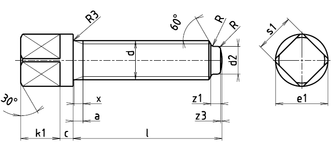

Příklad označení upínacího šroubu se závitem M12, délky l=50 mm, třídy pevnosti 5, z oceli 11 110, s čistým povrchem:
ŠROUB M12×50 ČSN 02 1122.11
| Závit d | amax. | c | d2h14 | e1 | k1 | R | R3 | s1 | x | z1+IT15 | z3 |
|---|---|---|---|---|---|---|---|---|---|---|---|
| M5 | 1,8 | 3,5 | 6,5 | 5 | 0,3 | 0,3 | 5 | 2,0 | 1,25 | 0,6 | |
| M6 | 2,6 | 4,0 | 8 | 6 | 0,4 | 0,3 | 6 | 2,5 | 1,5 | 0,7 | |
| M8 | 3,0 | 3 | 5,5 | 10 | 8 | 0,4 | 0,5 | 8 | 3,2 | 2,0 | 1,0 |
| M10 | 4,0 | 3 | 7,0 | 13 | 10 | 0,5 | 0,5 | 10 | 3,8 | 2,5 | 1,0 |
| M12 | 4,0 | 4 | 8,5 | 16 | 12 | 0,6 | 1,0 | 12 | 4,3 | 3,0 | 1,2 |
| M16 | 4,5 | 4 | 12 | 22 | 16 | 0,8 | 1,2 | 17 | 5,0 | 4,0 | 1,7 |
| M20 | 6,0 | 5 | 15 | 28 | 20 | 1,0 | 1,2 | 22 | 6,3 | 5,0 | 2,0 |
| M24 | 7,0 | 6 | 18 | 32 | 22 | 1,0 | 1,6 | 24 | 7,5 | 6,0 | 2,5 |
| Délka l | 15 | 20 | 25 | 30 | 35 | 40 | 50 | 60 | 70 | 80 | 90 | 100 |
|---|---|---|---|---|---|---|---|---|---|---|---|---|
| Závit d | Přibližná hmotnost [g] | |||||||||||
| M8 | 9,78 | 11,3 | 12,9 | 14,6 | 16,1 | 17,7 | ||||||
| M10 | 19,6 | 22,1 | 24,7 | 27,2 | 29,7 | 34,7 | 39,8 | |||||
| M12 | 35,8 | 39,5 | 43,1 | 46,8 | 54,0 | 61,4 | ||||||
| M16 | 96,0 | 109 | 123 | 136 | 150 | |||||||
| M20 | 217 | 238 | 259 | 281 | 301 | |||||||
| M24 | 304 | 334 | 364 | 388 | 423 | |||||||